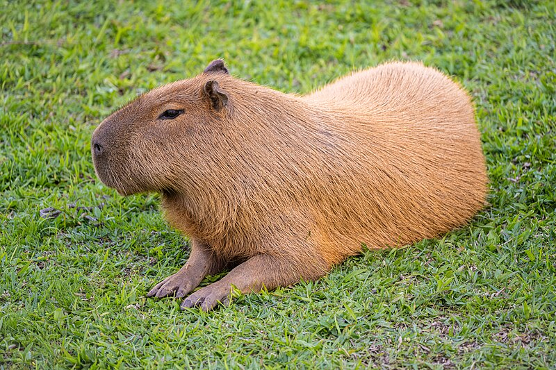
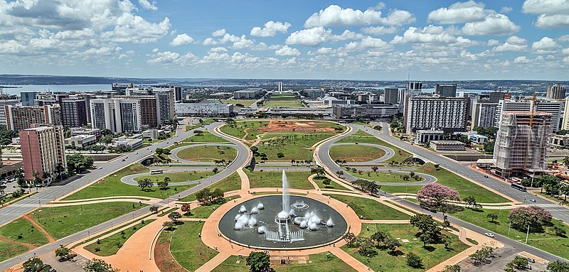
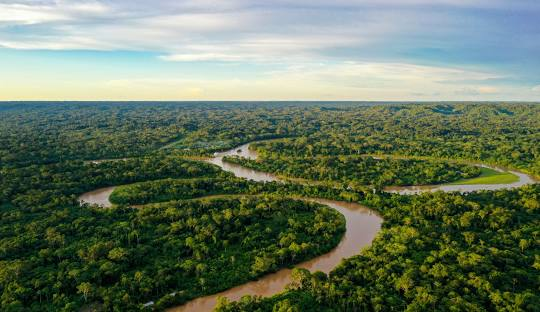
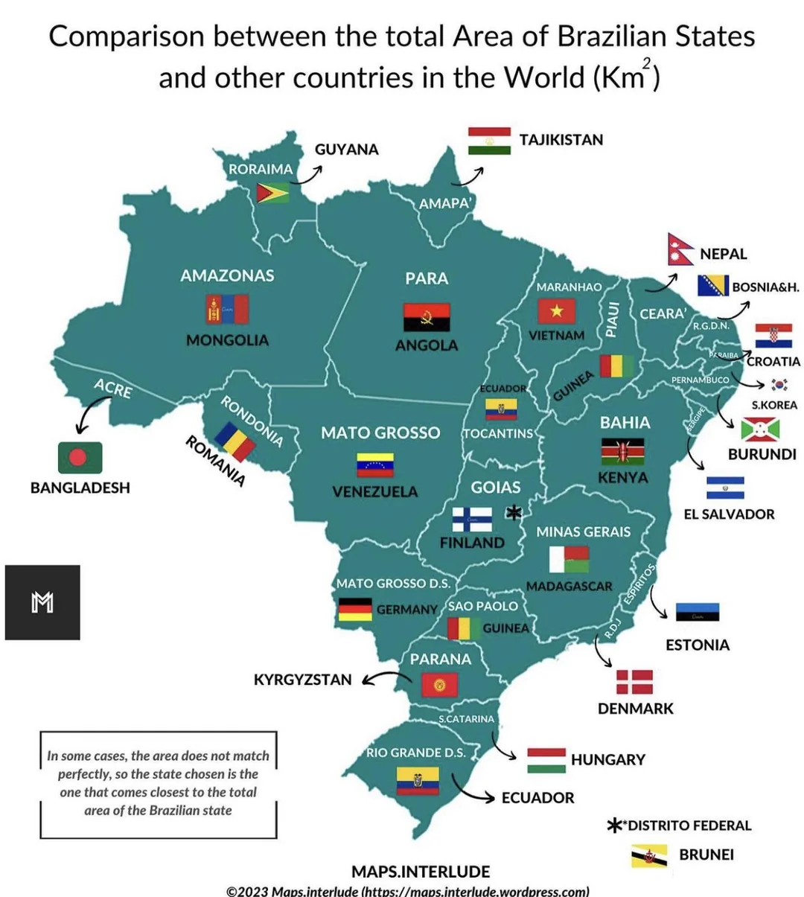
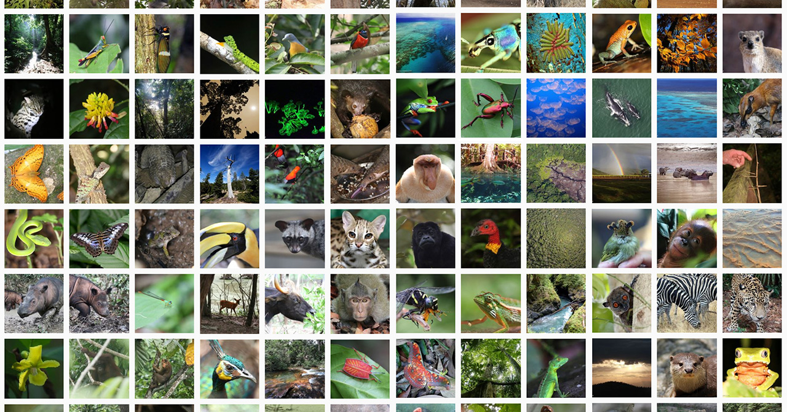

Capybaras are massive rodents who live in South America in Brazil. They have waterproof and rough fur and have partially webbed feet to help with swimming. This rodent is known to be very relaxed and calm around other animals, and is widely loved and a great reason to go to Brazil just to see them.

Brasília is the current capital city of Brazil. Before this the capital of Brazil actually used to be Rio de Janeiro, before it was changed to Brasília in 1960. It was designated as a UNESCO World Heritage site in 1987 due to its unique design and architecture and importance to Brazil.

The Amazon Rainforest is a massive tropical rainforest in the drainage basin of the Amazon River. The richest and most diverse biological reservoir that is the Amazon Rainforest is located mainly in Brazil. With 60% of it belonging to Brazil with the rest of the territory being shared with other countries in South America.

Brazil is in fact the 5th largest country in the world and shares a border with 10 out of the 12 countries located in South America. It is also unsurprisingly the biggest country in South America and takes up around half of the continent's landmass.

Brazil is infact home to some of the most bio-diverse places in the world, with estimates of Brazil having around 4 million plant and animal species, with places in it such as the Amazon Rainforest and other tropical rainforests sbeing a hot spot for bio-diversity.

Did you know the Brazil's former capital, Rio de Janeiro, was actually a mistranslation? The portuguese explorer who named the former capital thought Rio de Janeiro meant "the mouth of a river" when it actually meant "January River".